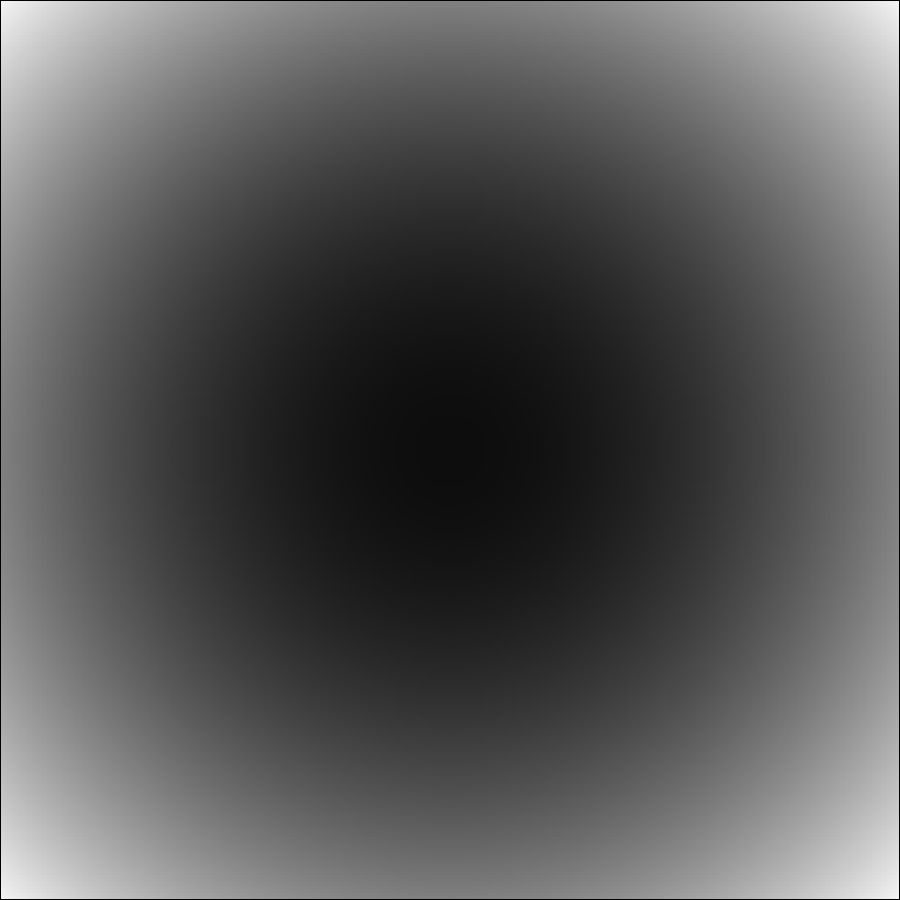
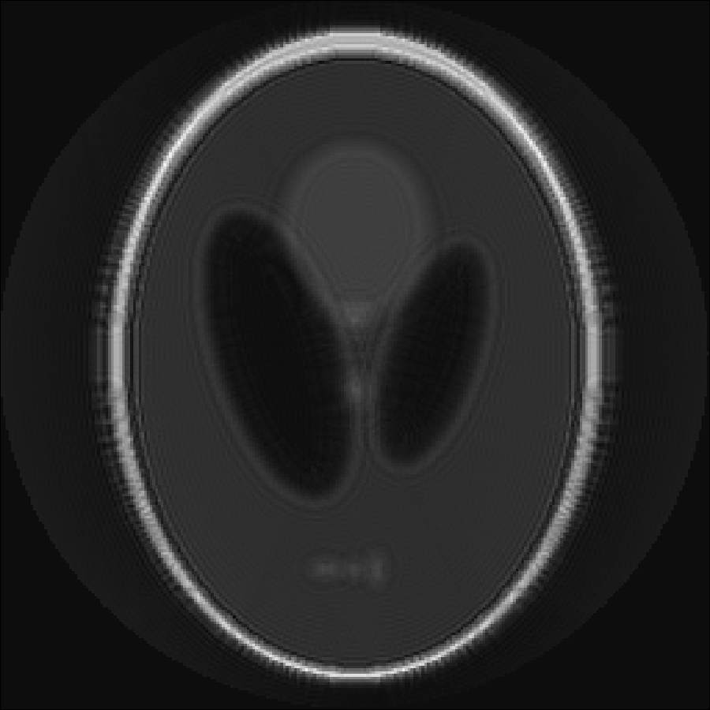
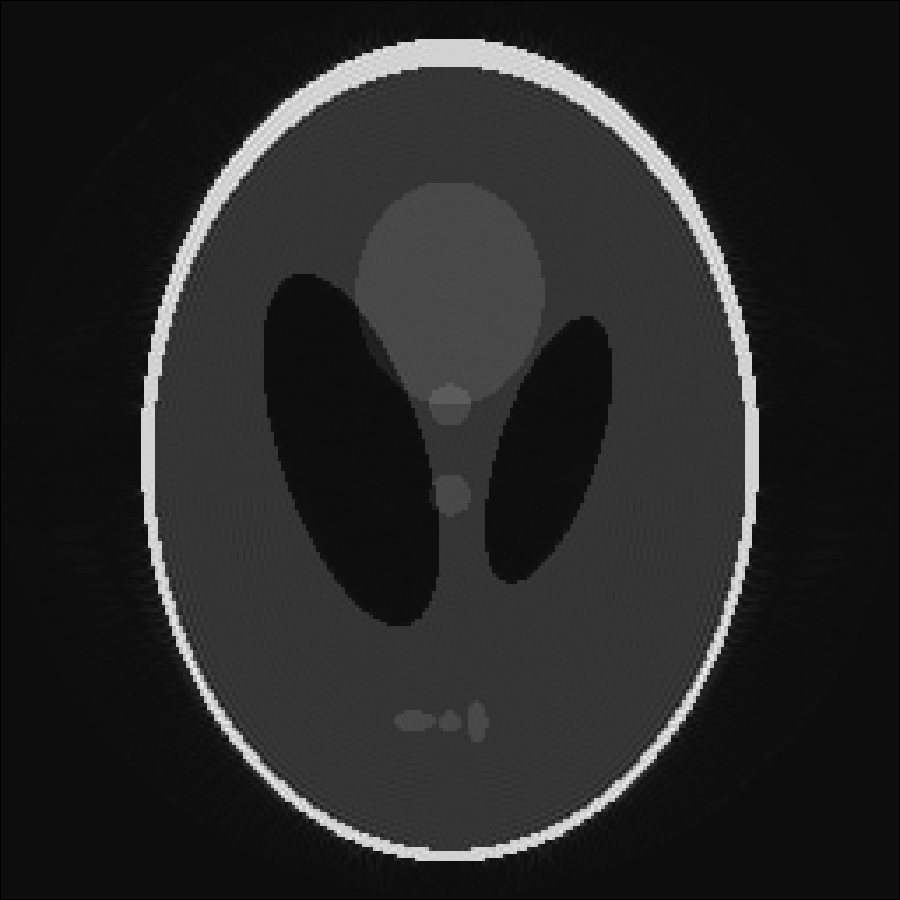

Offresonance Correction
For trajectories with long readouts the MRI images are degraded by offresonance artifacts, if the offresonance is not taken into account during reconstruction. We provide fast algorithms that are capable of correcting offresonance artifacts provided that the offresonance map is known. Our framework is also capable of correcting T2* relaxation effects. The later are encoded in the real part of the correction map while the offresoanance is encoded in the imaginary part. The following example shows an example of a simulation and reconstruction of MRI data that takes offresonance due to an inhomogeneous fieldmap into account. The example can be run by entering
include(joinpath(dirname(pathof(MRIReco)),"../docs/src/examples/exampleFieldmap.jl"))into the Julia REPL.
using MRIReco
N = 256
I = shepp_logan(N)
I = circularShutterFreq!(I,1)
cmap = 1im*quadraticFieldmap(N,N,125*2pi)
# simulation parameters
params = Dict{Symbol, Any}()
params[:simulation] = "fast"
params[:trajName] = "Spiral"
params[:numProfiles] = 1
params[:numSamplingPerProfile] = N*N
params[:windings] = 128
params[:AQ] = 3.0e-2
params[:correctionMap] = cmap[:,:,1]
# do simulation
acqData = simulation(I, params)
# reco parameters
params = Dict{Symbol, Any}()
params[:reco] = "direct"
params[:reconSize] = (N,N)
params[:correctionMap] = cmap
params[:alpha] = 1.75
params[:m] = 4.0
params[:K] = 28
# do reconstruction
Ireco = reconstruction(acqData, params)The considered quadratic fieldmap looks like this:

The reconstruction without and with offresonance correction are shown below:

